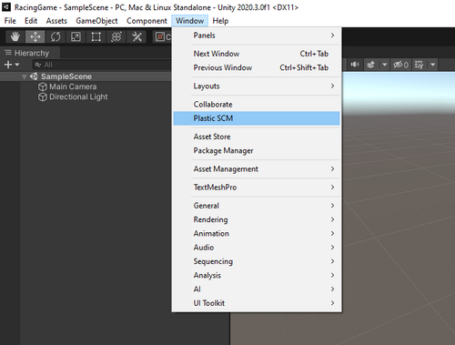
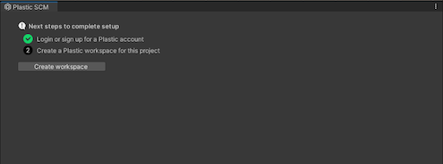
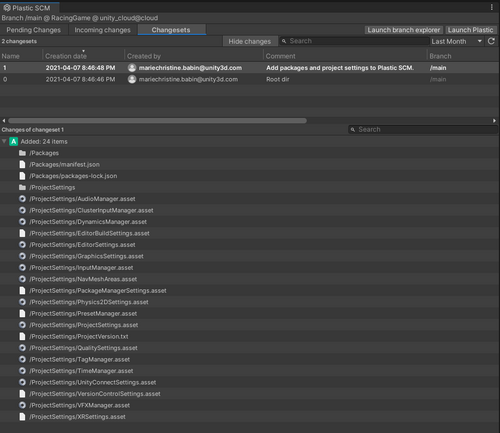
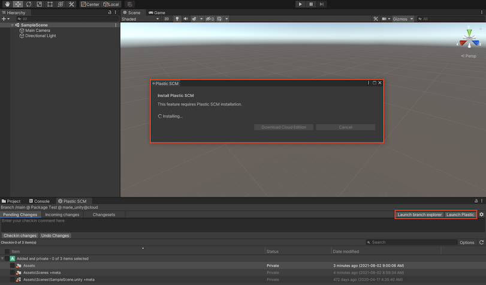

Getting started with a new Plastic SCM repository¶
Note: To start from an existing Plastic SCM repository, see Getting started with an existing Plastic SCM repository.
You can walk through a straightforward onboarding wizard when creating a repository for your Unity project. This new wizard will help you:
Set up your account and configure your repository for your Unity project, enabling you to sync to a Plastic SCM Cloud Edition repository.
Generate a standard ignore file that prevents unnecessary components of your Unity project from being checked in.
Automatically do the first check-in so that your repository is in sync with your local changes.
Open your Unity project.
To access the Plastic SCM window in the Unity Editor, click Window > Plastic SCM: 
In the Plastic SCM onboarding window, complete the steps to continue: 
Unity connects your project to your Plastic SCM Cloud repository; Plastic SCM automatically creates an ignore file in the workspace for Unity projects so it doesn’t track files that shouldn’t be part of the repository. It also creates a standard automatic checkin during the initial setup. So now you’re all set to start using Plastic SCM!

Note: Basic version control actions, such as viewing pending changes, checking in changes, and viewing changesets, don’t require a Plastic SCM Client install. However, if you want to use more advanced features, such as branching and diffing changeset, you will be prompted to download the Plastic SCM client (if you have not already done so):
